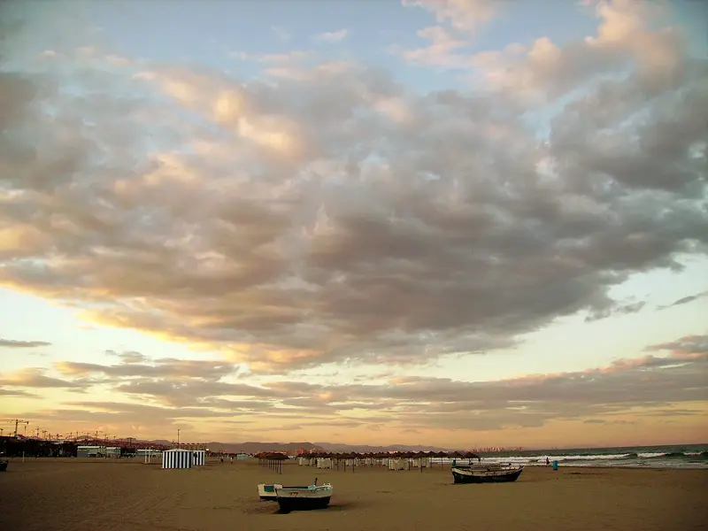
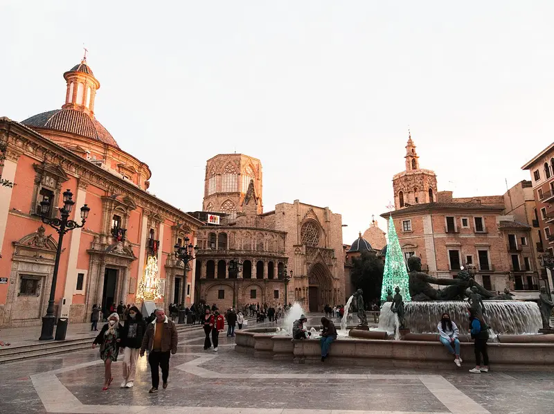
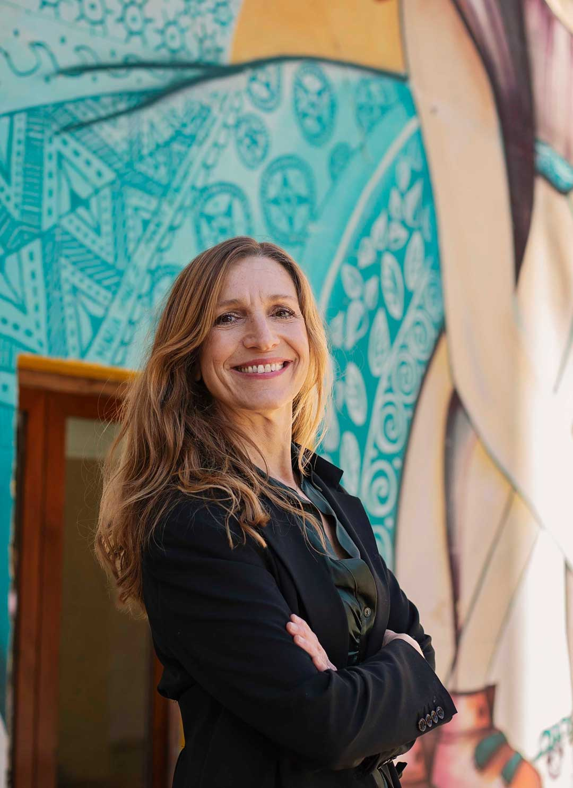

A / Place first
The Coastal Story
Start with the shore. The animated logo and horizon lead into everyday Valencia, then into your services and packages.
Preview The Coastal StoryPrepared for Christa Brokke
Christa, each version carries forward the warm colours and motion you liked. One starts with Valencia itself, one with the practical steps, and one with a welcome from you.
Explore the three versions01 / Website directions

A / Place first
Start with the shore. The animated logo and horizon lead into everyday Valencia, then into your services and packages.
Preview The Coastal Story
B / Services first
A full-screen view of Plaça de la Mare de Déu welcomes visitors to Valencia. The homepage then takes them straight to the support they need.
Preview A Clear Route
C / Christa first
Photographic prints unfold into a first-person greeting. Your portrait, story and client experiences come before the service guide.
Preview A Personal Welcome02 / Live preview
Watch the opening, then try finding a service, a package or the enquiry form.
Screen size
Both logo proofs are shown in medium-weight Classic red and orange. The logo choice is separate from the website choice.
03 / Your feedback in the designs
04 / Next steps